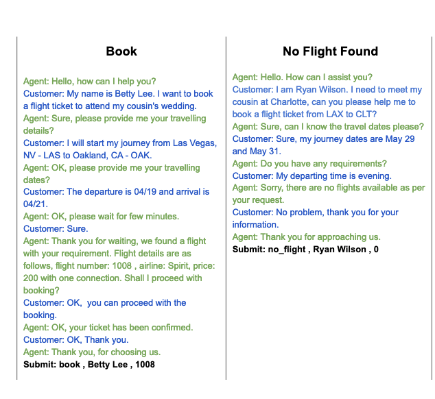

[TOC]
- Title: Context Aware Language Modeling for Goal Oriented Dialogue Systems
- Author: Charlie Snell et. al.
- Publish Year: 22 Apr 2022
- Review Date: Sun, Nov 20, 2022
Summary of paper
Motivation
- while supervised learning with large language models is capable of producing realistic text, how to steer such responses towards completing a specific task without sacrificing language quality remains an open question.
- how can we scalably and effectively introduce the mechanisms of goal-directed decision making into end-to-end language models, to steer language generation toward completing specific dialogue tasks rather than simply generating probable responses.
- they aim to directly finetune language models in a task-aware manner such that they can maximise a give utility function.
Contribution
- it seems like the manipulation of training dataset and also the auxiliary objective are the two main “innovations” of the model.
Some key terms
Dialogue
- dialogue can also be viewed as a sequential decision making process, which is well-suited to planning and reinforcement learning (RL) algorithm
- Training such a system with active human-in-the-loop interaction quickly becomes expensive and cumbersome, making it desirable to develop techniques for goal-directed training of dialogue system that can effectively leverage offline data
- Most systems take a pipelined approach, where an abstract representation of state and actions is designed by hand and then combined with RL, rather than generating dialogue end-to-end.
- These pipelined approaches rely on a manually designed decomposition of the dialogue task, which may be domain specific and more importantly, may not enjoy all the benefits of tightly integrating low level text generation with the overall goals of the task.
Formulation
- large language models can already be formulated within a MDP as capturing both the dynamics and policy for a decision
- the dynamics of a MDP define how states, obervations and reward are generated at each time step.
- dialogue history serves as state, and the agent’s utterances serve as actions.
- they propose a conditional imitation learning strategy coupled with a novel task relabelling approach that can finetune language model from offline data. (imitation?)
- in the end, the model still represents the joint distribution over dialogues, but tilts this distribution towards dialogues with high rewards
Dialogue Task relabelling

Context aware fine-tuning
- While these high-level actions are theoretically learnable from correlations between the dialogue and the given context, in general, we find that learning these correlations corresponds to a relatively small decrease in dialogue entropy under the model.
- As a result, the model is less incentivized to learn these correlations relevant tot he task than the form of the dialogue
- this is the trade off between fluency and the goal-oriented
- ISSUE: the primary high-level action involved in Air Dialogue is the decision of which flight table entry, if any, to recommend to the user. They therefore implement the auxiliary objective as a classification head on top of the language model, trained to predict the flight table entry that meets the customer’s request.
- BUT this is specific to the AirFlight dataset.